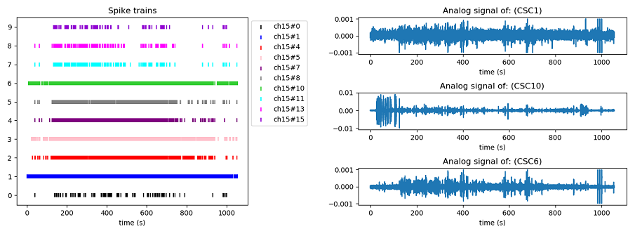
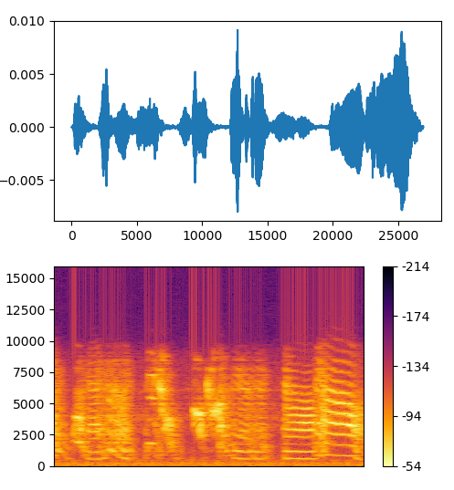
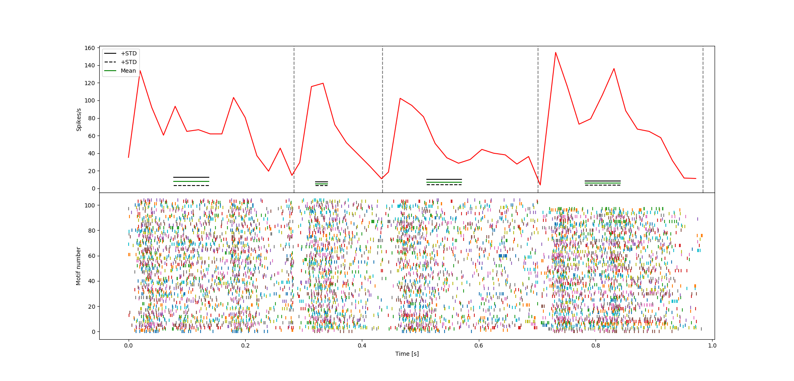
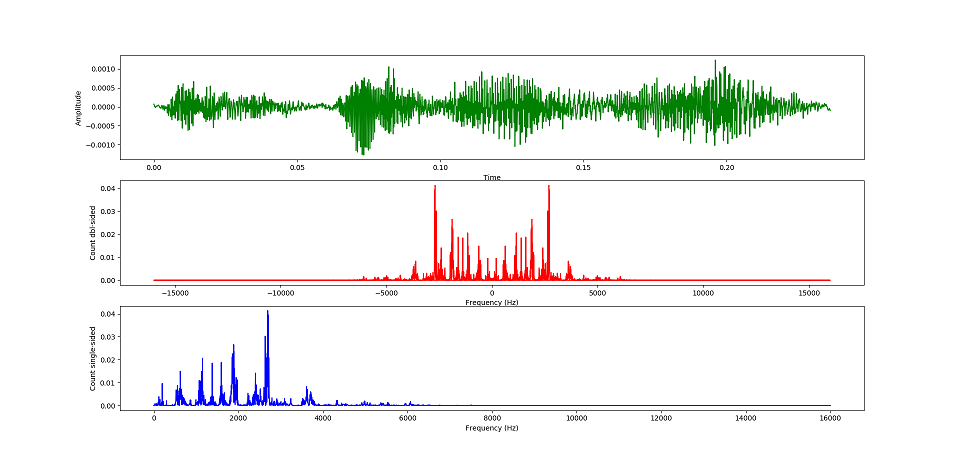
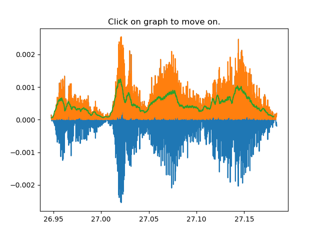
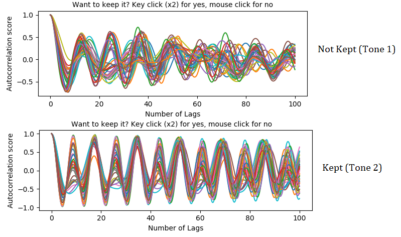
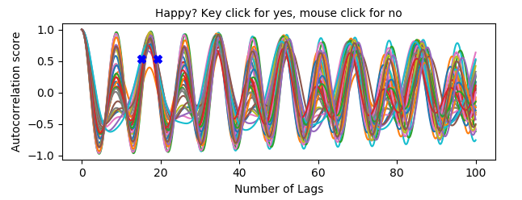

|
Songbird Data Analysis
A software that allows you to perform analysis on songbirds' neural and vocalization data stored as Spike2 format (.smr).
|
|
Songbird Data Analysis
A software that allows you to perform analysis on songbirds' neural and vocalization data stored as Spike2 format (.smr).
|
The tutorial about the version that iterates through several folders can be found here.

2 - Now, you can run the script with the magic command %run. By doing that, you will be able to use all the functions in the code. * Remember that the files that will be used in the functions have to be either in the same directory of functions.py, or you should change the directory again by using the cd command.
Now, let's see some examples:
With this function you can read a .smr file and obtain its block. This function will return 2 things: data, data_seg.
With this function you can visualize the analogical signals and the spike trains inside the .smr file. *In case you want the plot to be interactive, %matplolib must not be "inline".

With this function you can visualize the spectrogram of a motif/syllable.
* The songfile is a .npy file that contains the analogical signal of the song, created by the function createsave(file). Please check the documentation of createsave(file) to know how to obtain the file.
Now, in spectrogram(songfile, beg, end, fs), one will need the value in sample points for the beginning and the end of a motif/syllable. Fs is the sampling frequency. To have an idea of how a file with the labels (and sample points) can look like in our data, please click here. To generate the image below we will get from 862331 up to 889794.

With this function you can obtain a Peri-Stimulus Time Histogram (PSTH) that works with a time warping method to align all the motifs/renditions to the same mean. The mean and standard deviation of the baseline will also be computed for each syllable, allowing further statistical comparison.
* The spikefile is the .txt file that contains the spike times of a channel, it is created by the function createsave(file). Please check the documentation of createsave(file) to know how to obtain the file.
Now, in this function, one will need the value in time (seconds) that corresponds to the beginning (basebeg) and the end (basend) of a silent period. This is used to compute the baseline firing frequency. Fs is the sampling frequency. To have an idea of how a file with the labels (motifile) can look like in our data, please click here.

With this function you can obtain a Power Spectrum graph.
* The songfile is a .npy file that contains the analogical signal of the song, created by the function createsave(file). Please check the documentation of createsave(file) to know how to obtain the file.
Now, in this function, one will need the value in sample points for the beginning and the end of a motif/syllable. Fs is the sampling frequency. To have an idea of how a file with the labels (and sample points) can look like in our data, please click here. To generate the image below we will get from 862331 up to 869890, which corresponds to a syllable A.

With this function you can obtain the pitch of each note inside a syllable and then perform a correlation between the pitch of the tone and the spiking activity inside a premotor window (default: 50ms), and inside the duration of the tone. To use this function %matplolib must be not inline. *** The same logic is used for corramplitude() and corrspectral().
* The spikefile is the .txt file that contains the spike times of a channel, it is created by the function createsave(file). Please check the documentation of createsave(file) to know how to obtain the file.
In this function, one will need to define the number of lags for the autocorrelation, a window_size for obtaining the convolved version of the amplitude signal, fs is the sampling frequency, and means is a .txt file that contains the cutting points for the separating the chunks (tones). To have an idea of how a file with the labels (motifile) can look like in our data, please click here.
This function needs to be explained step by step, so, let's go:
In our case it could be corrpitch("CSC10.npy", "labels.txt", 100, 100,32000,"ch15#1.txt", means=None)
Step 2: A "Which Syllable?" will be shown in the console, asking for which syllable will be used for the analysis. *Default syllables : A,B,C,D
Step 3: A graph showing an example of the syllable will appear, just to give the user an idea how many tones/chunks should be cut. Thus, after that the user should answer in the console "Number of chunks?" For the syllable used in this example (syb A), we decided to cut it in 4 chunks.

Step 4: After defining the number of chunks to be cut, 4 random examples of the syllable will pop up asking for the user to click on the plot to define the cutting point/coordinates. After clicking, the user has to either use a key to move to the next plot, or click with the mouse to reset the coordinates and select again.

Step 5: After cutting the tones/chunks, an example of how the syllables will be cut will pop up.

Step 6: From now on, a autocorrelation will be performed for each tone. A graph will pop up for each note, showing the results. In our case, we only kept the tones who showed a periodicity/consistency throught the autocorrelation lags.

Step 7: Then, if the user chooses to keep a tone, it will have to click on the graph to stablish the peak in which the pitch can be found.

Step 8: After selecting the peak, the user will be asked if correlations should be performed [Y/n]. If Y, a number of iterations for bootstrapping will be asked, and the correlation analysis will be performed.
The code checks for the normality and homocedasticity of the data before performing the correlation test (Pearson or Spearman). Other than that, there is also a check point for the amount of samples (minimum is 3), and also to see if the number of spikes in the correlation columns are not all 0 (this would cause an error for the analysis).
All correlation data will be saved in .txt files (Raw data and bootstrapped)
Step 9: Finally, the user will be asked if he/she wants to idenfity an possible point of the peak to have an estimation of the pitch. If yes, the final figure will contain an annotation on the clicked coordinate.
The final figure will have on the upper left corner a plot of the interpolated version of the peak (to increase precision in the pitch detection). A plot with the distribution of the pitchs (upper left), and the autocorrelation plot (bottom).
 1.8.15
1.8.15
{kind=link}
{kind=link}
{kind=link}